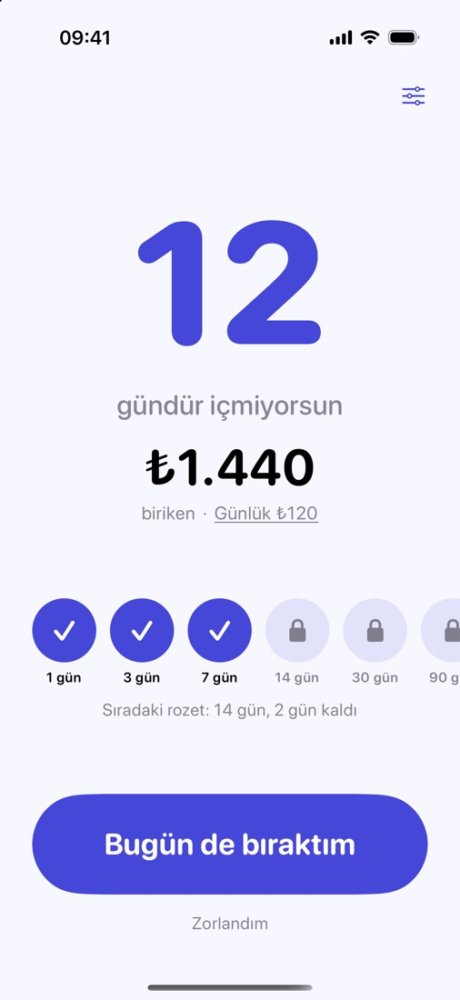
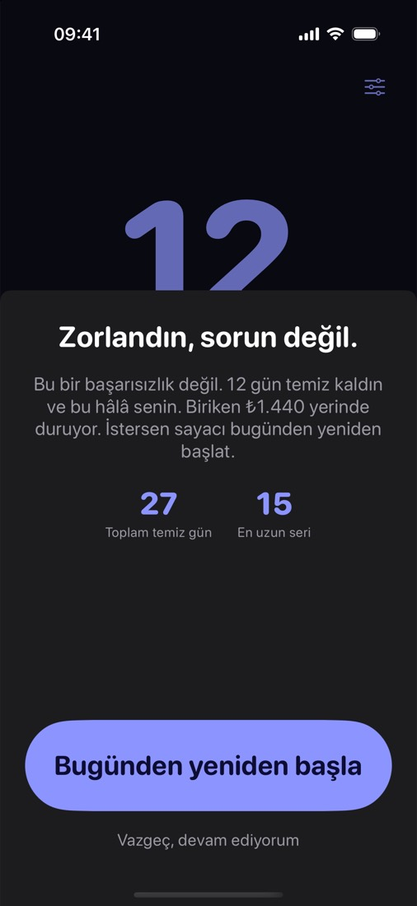

X gündür. Cebinde kalan ₺.
Bıraktığın günleri ve biriken parayı tek ekranda gör.
Haberdar olİlk sürüm hazır olunca bir kez yazarız. E-postan yalnızca ilk sürüm haberi için, açık rızanla işlenir ve istediğin zaman silinmesini isteyebilirsin (aydınlatma metni).
Bu bir prototiptir; uygulama geliştiriliyor. Ekran görüntüleri örnek veriyle hazırlandı. Tıbbi tavsiye değildir; bırakma sürecinde bir sağlık profesyoneline danışmanı öneririz.
Neler olacak?
- Gün sayacı. Kaç gündür devam ettiğin büyük, okunaklı bir sayıyla görünür.
- Biriken para. Günlük harcamanı sen girersin; sayaç gün sayısı × günlük harcama olarak hesaplar.
- Zor gün için yer. Zorlandığın gün sayacı yargılamadan yeniden başlatabilirsin; toplam temiz gün saklanır.
Prototipten ekranlar


Prototip · örnek veri.
İlk sürüm hazır olunca bir kez yazarız.